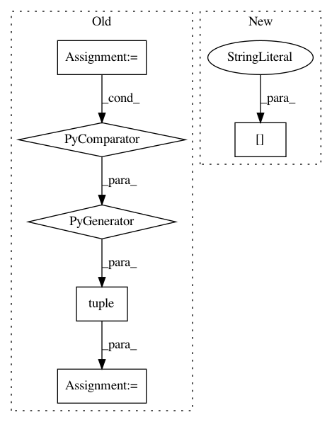

f4beaac559e00a3676d942dc7e8fea69efc01cfe,catalyst/metrics/avg_precision.py,,mean_avg_precision,#,74
Before Change
The map score for every k.
size: [len(top_k), 1]
map_k_tuple = tuple(
torch.mean(avg_precision(outputs, targets, k)).item() for k in top_k
)
return map_k_tuple
__all__ = ["mean_avg_precision", "avg_precision"]
After Change
results = []
for k in topk:
k = min(outputs.size(1), k)
results.append(torch.mean(avg_precision(outputs, targets)[:k]))
return results
In pattern: SUPERPATTERN
Frequency: 3
Non-data size: 6
Instances
Project Name: Scitator/catalyst
Commit Name: f4beaac559e00a3676d942dc7e8fea69efc01cfe
Time: 2020-11-30
Author: raveforlive@gmail.com
File Name: catalyst/metrics/avg_precision.py
Class Name:
Method Name: mean_avg_precision
Project Name: analysiscenter/batchflow
Commit Name: dea6518310856dcc35d3f877f75a2502200cad40
Time: 2021-02-18
Author: Tsimfer.SA@gazprom-neft.ru
File Name: batchflow/models/torch/layers/conv.py
Class Name: BaseConv
Method Name: __init__
Project Name: deepmind/trfl
Commit Name: 4026291f0e436acde19d0f8355e911cef0ceb3c5
Time: 2019-12-19
Author: diegolascasas@google.com
File Name: trfl/dist_value_ops.py
Class Name:
Method Name: _slice_with_actions